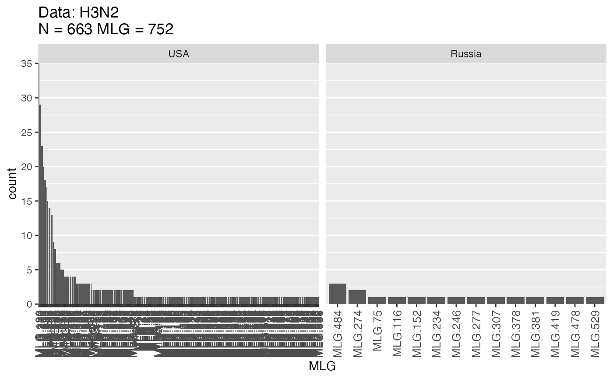

Create counts, vectors, and matrices of multilocus genotypes.
mlg(gid, quiet = FALSE) mlg.table( gid, strata = NULL, sublist = "ALL", exclude = NULL, blacklist = NULL, mlgsub = NULL, bar = TRUE, plot = TRUE, total = FALSE, color = FALSE, background = FALSE, quiet = FALSE ) mlg.vector(gid, reset = FALSE) mlg.crosspop( gid, strata = NULL, sublist = "ALL", exclude = NULL, blacklist = NULL, mlgsub = NULL, indexreturn = FALSE, df = FALSE, quiet = FALSE ) mlg.id(gid)
Arguments
| gid | |
|---|---|
| quiet |
|
| strata | a formula specifying the strata at which computation is to be performed. |
| sublist | a |
| exclude | a |
| blacklist | DEPRECATED, use exclude. |
| mlgsub | a |
| bar | deprecated. Same as |
| plot |
|
| total |
|
| color | an option to display a single barchart for mlg.table, colored by
population (note, this becomes facetted if |
| background | an option to display the the total number of MLGs across populations per facet in the background of the plot. |
| reset | logical. For genclone objects, the MLGs are defined by the input
data, but they do not change if more or less information is added (i.e.
loci are dropped). Setting |
| indexreturn |
|
| df |
|
Value
mlg
an integer describing the number of multilocus genotypes observed.
mlg.table
a matrix with columns
indicating unique multilocus genotypes and rows indicating populations.
This table can be used with the funciton diversity_stats to calculate
the Shannon-Weaver index (H), Stoddart and Taylor's
index (aka inverse Simpson's index; G), Simpson's index (lambda), and evenness (E5).
mlg.vector
a numeric vector naming the multilocus genotype of each individual in the dataset.
mlg.crosspop
default a
listwhere each element contains a named integer vector representing the number of individuals represented from each population in that MLGindexreturn = TRUEavectorof integers defining the multilocus genotypes that have individuals crossing populationsdf = TRUEA long form data frame with the columns: MLG, Population, Count. Useful for graphing with ggplot2
mlg.id
a list of multilocus genotypes with the associated individual names per MLG.
a list containing vectors of population names for each MLG.
Details
Multilocus genotypes are the unique combination of alleles across
all loci. For details of how these are calculated see vignette("mlg",
package = "poppr"). In short, for genind and genclone objects, they are
calculated by using a rank function on strings of alleles, which is
sensitive to missing data. For genlight and snpclone objects, they are
calculated with distance methods via bitwise.dist and
mlg.filter, which means that these are insensitive to missing
data. Three different types of MLGs can be defined in poppr:
original - the default definition of multilocus genotypes as detailed above
contracted - these are multilocus genotypes collapsed into multilocus lineages (
mll) with genetic distance viamlg.filtercustom - user-defined multilocus genotypes. These are useful for information such as mycelial compatibility groups
All of the functions documented here will work on any of the MLG types defined in poppr
Note
The resulting matrix of mlg.table can be used for analysis with
the vegan package.
mlg.vector will recalculate the mlg vector for
genind objects and will return the contents of the mlg
slot in genclone objects. This means that MLGs will be
different for subsetted genind objects.
See also
Author
Zhian N. Kamvar
Examples
#> ############################# #> # Number of Individuals: 187 #> # Number of MLG: 119 #> #############################amlg # 119#> [1] 119# show the multilocus genotype vector avec <- mlg.vector(Aeut) avec#> [1] 63 53 17 16 26 42 8 17 16 93 94 112 44 118 51 113 45 110 #> [19] 114 7 111 20 20 20 20 30 20 20 20 20 20 28 66 66 68 66 #> [37] 67 23 66 65 66 57 22 119 36 35 36 35 62 35 34 52 33 63 #> [55] 1 39 59 61 23 21 47 48 25 50 32 49 60 9 10 60 27 13 #> [73] 11 14 12 14 14 29 15 13 32 41 43 24 46 52 38 37 31 24 #> [91] 40 31 109 19 18 64 108 86 82 83 2 6 2 91 117 116 80 80 #> [109] 58 5 3 4 56 84 54 73 80 89 106 80 80 80 88 70 76 70 #> [127] 70 90 104 81 70 92 70 75 75 99 75 96 74 74 74 75 98 96 #> [145] 69 69 75 69 69 100 55 72 105 72 115 71 85 87 59 77 107 76 #> [163] 90 80 99 88 80 77 78 77 87 80 91 101 79 102 78 103 103 95 #> [181] 97 81 80 97 97 97 101# Get a table atab <- mlg.table(Aeut, color = TRUE)atab#> MLG.1 MLG.2 MLG.3 MLG.4 MLG.5 MLG.6 MLG.7 MLG.8 MLG.9 MLG.10 MLG.11 #> Athena 1 0 0 0 0 0 1 1 1 1 1 #> Mt. Vernon 0 2 1 1 1 1 0 0 0 0 0 #> MLG.12 MLG.13 MLG.14 MLG.15 MLG.16 MLG.17 MLG.18 MLG.19 MLG.20 #> Athena 1 2 3 1 2 2 1 1 9 #> Mt. Vernon 0 0 0 0 0 0 0 0 0 #> MLG.21 MLG.22 MLG.23 MLG.24 MLG.25 MLG.26 MLG.27 MLG.28 MLG.29 #> Athena 1 1 2 2 1 1 1 1 1 #> Mt. Vernon 0 0 0 0 0 0 0 0 0 #> MLG.30 MLG.31 MLG.32 MLG.33 MLG.34 MLG.35 MLG.36 MLG.37 MLG.38 #> Athena 1 2 2 1 1 3 2 1 1 #> Mt. Vernon 0 0 0 0 0 0 0 0 0 #> MLG.39 MLG.40 MLG.41 MLG.42 MLG.43 MLG.44 MLG.45 MLG.46 MLG.47 #> Athena 1 1 1 1 1 1 1 1 1 #> Mt. Vernon 0 0 0 0 0 0 0 0 0 #> MLG.48 MLG.49 MLG.50 MLG.51 MLG.52 MLG.53 MLG.54 MLG.55 MLG.56 #> Athena 1 1 1 1 2 1 0 0 0 #> Mt. Vernon 0 0 0 0 0 0 1 1 1 #> MLG.57 MLG.58 MLG.59 MLG.60 MLG.61 MLG.62 MLG.63 MLG.64 MLG.65 #> Athena 1 0 1 2 1 1 2 1 1 #> Mt. Vernon 0 1 1 0 0 0 0 0 0 #> MLG.66 MLG.67 MLG.68 MLG.69 MLG.70 MLG.71 MLG.72 MLG.73 MLG.74 #> Athena 5 1 1 0 0 0 0 0 0 #> Mt. Vernon 0 0 0 4 5 1 2 1 3 #> MLG.75 MLG.76 MLG.77 MLG.78 MLG.79 MLG.80 MLG.81 MLG.82 MLG.83 #> Athena 0 0 0 0 0 0 0 0 0 #> Mt. Vernon 5 2 3 2 1 10 2 1 1 #> MLG.84 MLG.85 MLG.86 MLG.87 MLG.88 MLG.89 MLG.90 MLG.91 MLG.92 #> Athena 0 0 0 0 0 0 0 0 0 #> Mt. Vernon 1 1 1 2 2 1 2 2 1 #> MLG.93 MLG.94 MLG.95 MLG.96 MLG.97 MLG.98 MLG.99 MLG.100 MLG.101 #> Athena 1 1 0 0 0 0 0 0 0 #> Mt. Vernon 0 0 1 2 4 1 2 1 2 #> MLG.102 MLG.103 MLG.104 MLG.105 MLG.106 MLG.107 MLG.108 MLG.109 #> Athena 0 0 0 0 0 0 1 1 #> Mt. Vernon 1 2 1 1 1 1 0 0 #> MLG.110 MLG.111 MLG.112 MLG.113 MLG.114 MLG.115 MLG.116 MLG.117 #> Athena 1 1 1 1 1 0 0 0 #> Mt. Vernon 0 0 0 0 0 1 1 1 #> MLG.118 MLG.119 #> Athena 1 1 #> Mt. Vernon 0 0# See where multilocus genotypes cross populations acrs <- mlg.crosspop(Aeut) # MLG.59: (2 inds) Athena Mt. Vernon#> MLG.59: (2 inds) Athena Mt. Vernon# See which individuals belong to each MLG aid <- mlg.id(Aeut) aid["59"] # individuals 159 and 57#> $`59` #> [1] "057" "159" #># \dontrun{ # For the mlg.table, you can also choose to display the number of MLGs across # populations in the background mlg.table(Aeut, background = TRUE)#> MLG.1 MLG.2 MLG.3 MLG.4 MLG.5 MLG.6 MLG.7 MLG.8 MLG.9 MLG.10 MLG.11 #> Athena 1 0 0 0 0 0 1 1 1 1 1 #> Mt. Vernon 0 2 1 1 1 1 0 0 0 0 0 #> MLG.12 MLG.13 MLG.14 MLG.15 MLG.16 MLG.17 MLG.18 MLG.19 MLG.20 #> Athena 1 2 3 1 2 2 1 1 9 #> Mt. Vernon 0 0 0 0 0 0 0 0 0 #> MLG.21 MLG.22 MLG.23 MLG.24 MLG.25 MLG.26 MLG.27 MLG.28 MLG.29 #> Athena 1 1 2 2 1 1 1 1 1 #> Mt. Vernon 0 0 0 0 0 0 0 0 0 #> MLG.30 MLG.31 MLG.32 MLG.33 MLG.34 MLG.35 MLG.36 MLG.37 MLG.38 #> Athena 1 2 2 1 1 3 2 1 1 #> Mt. Vernon 0 0 0 0 0 0 0 0 0 #> MLG.39 MLG.40 MLG.41 MLG.42 MLG.43 MLG.44 MLG.45 MLG.46 MLG.47 #> Athena 1 1 1 1 1 1 1 1 1 #> Mt. Vernon 0 0 0 0 0 0 0 0 0 #> MLG.48 MLG.49 MLG.50 MLG.51 MLG.52 MLG.53 MLG.54 MLG.55 MLG.56 #> Athena 1 1 1 1 2 1 0 0 0 #> Mt. Vernon 0 0 0 0 0 0 1 1 1 #> MLG.57 MLG.58 MLG.59 MLG.60 MLG.61 MLG.62 MLG.63 MLG.64 MLG.65 #> Athena 1 0 1 2 1 1 2 1 1 #> Mt. Vernon 0 1 1 0 0 0 0 0 0 #> MLG.66 MLG.67 MLG.68 MLG.69 MLG.70 MLG.71 MLG.72 MLG.73 MLG.74 #> Athena 5 1 1 0 0 0 0 0 0 #> Mt. Vernon 0 0 0 4 5 1 2 1 3 #> MLG.75 MLG.76 MLG.77 MLG.78 MLG.79 MLG.80 MLG.81 MLG.82 MLG.83 #> Athena 0 0 0 0 0 0 0 0 0 #> Mt. Vernon 5 2 3 2 1 10 2 1 1 #> MLG.84 MLG.85 MLG.86 MLG.87 MLG.88 MLG.89 MLG.90 MLG.91 MLG.92 #> Athena 0 0 0 0 0 0 0 0 0 #> Mt. Vernon 1 1 1 2 2 1 2 2 1 #> MLG.93 MLG.94 MLG.95 MLG.96 MLG.97 MLG.98 MLG.99 MLG.100 MLG.101 #> Athena 1 1 0 0 0 0 0 0 0 #> Mt. Vernon 0 0 1 2 4 1 2 1 2 #> MLG.102 MLG.103 MLG.104 MLG.105 MLG.106 MLG.107 MLG.108 MLG.109 #> Athena 0 0 0 0 0 0 1 1 #> Mt. Vernon 1 2 1 1 1 1 0 0 #> MLG.110 MLG.111 MLG.112 MLG.113 MLG.114 MLG.115 MLG.116 MLG.117 #> Athena 1 1 1 1 1 0 0 0 #> Mt. Vernon 0 0 0 0 0 1 1 1 #> MLG.118 MLG.119 #> Athena 1 1 #> Mt. Vernon 0 0mlg.table(Aeut, background = TRUE, color = TRUE)#> MLG.1 MLG.2 MLG.3 MLG.4 MLG.5 MLG.6 MLG.7 MLG.8 MLG.9 MLG.10 MLG.11 #> Athena 1 0 0 0 0 0 1 1 1 1 1 #> Mt. Vernon 0 2 1 1 1 1 0 0 0 0 0 #> MLG.12 MLG.13 MLG.14 MLG.15 MLG.16 MLG.17 MLG.18 MLG.19 MLG.20 #> Athena 1 2 3 1 2 2 1 1 9 #> Mt. Vernon 0 0 0 0 0 0 0 0 0 #> MLG.21 MLG.22 MLG.23 MLG.24 MLG.25 MLG.26 MLG.27 MLG.28 MLG.29 #> Athena 1 1 2 2 1 1 1 1 1 #> Mt. Vernon 0 0 0 0 0 0 0 0 0 #> MLG.30 MLG.31 MLG.32 MLG.33 MLG.34 MLG.35 MLG.36 MLG.37 MLG.38 #> Athena 1 2 2 1 1 3 2 1 1 #> Mt. Vernon 0 0 0 0 0 0 0 0 0 #> MLG.39 MLG.40 MLG.41 MLG.42 MLG.43 MLG.44 MLG.45 MLG.46 MLG.47 #> Athena 1 1 1 1 1 1 1 1 1 #> Mt. Vernon 0 0 0 0 0 0 0 0 0 #> MLG.48 MLG.49 MLG.50 MLG.51 MLG.52 MLG.53 MLG.54 MLG.55 MLG.56 #> Athena 1 1 1 1 2 1 0 0 0 #> Mt. Vernon 0 0 0 0 0 0 1 1 1 #> MLG.57 MLG.58 MLG.59 MLG.60 MLG.61 MLG.62 MLG.63 MLG.64 MLG.65 #> Athena 1 0 1 2 1 1 2 1 1 #> Mt. Vernon 0 1 1 0 0 0 0 0 0 #> MLG.66 MLG.67 MLG.68 MLG.69 MLG.70 MLG.71 MLG.72 MLG.73 MLG.74 #> Athena 5 1 1 0 0 0 0 0 0 #> Mt. Vernon 0 0 0 4 5 1 2 1 3 #> MLG.75 MLG.76 MLG.77 MLG.78 MLG.79 MLG.80 MLG.81 MLG.82 MLG.83 #> Athena 0 0 0 0 0 0 0 0 0 #> Mt. Vernon 5 2 3 2 1 10 2 1 1 #> MLG.84 MLG.85 MLG.86 MLG.87 MLG.88 MLG.89 MLG.90 MLG.91 MLG.92 #> Athena 0 0 0 0 0 0 0 0 0 #> Mt. Vernon 1 1 1 2 2 1 2 2 1 #> MLG.93 MLG.94 MLG.95 MLG.96 MLG.97 MLG.98 MLG.99 MLG.100 MLG.101 #> Athena 1 1 0 0 0 0 0 0 0 #> Mt. Vernon 0 0 1 2 4 1 2 1 2 #> MLG.102 MLG.103 MLG.104 MLG.105 MLG.106 MLG.107 MLG.108 MLG.109 #> Athena 0 0 0 0 0 0 1 1 #> Mt. Vernon 1 2 1 1 1 1 0 0 #> MLG.110 MLG.111 MLG.112 MLG.113 MLG.114 MLG.115 MLG.116 MLG.117 #> Athena 1 1 1 1 1 0 0 0 #> Mt. Vernon 0 0 0 0 0 1 1 1 #> MLG.118 MLG.119 #> Athena 1 1 #> Mt. Vernon 0 0# A simple example. 10 individuals, 5 genotypes. mat1 <- matrix(ncol=5, 25:1) mat1 <- rbind(mat1, mat1) mat <- matrix(nrow=10, ncol=5, paste(mat1,mat1,sep="/")) mat.gid <- df2genind(mat, sep="/") mlg(mat.gid)#> ############################# #> # Number of Individuals: 10 #> # Number of MLG: 5 #> ##############################> [1] 5mlg.vector(mat.gid)#> [1] 5 4 3 2 1 5 4 3 2 1mlg.table(mat.gid)#> MLG.1 MLG.2 MLG.3 MLG.4 MLG.5 #> Total 2 2 2 2 2# Now for a more complicated example. # Data set of 1903 samples of the H3N2 flu virus genotyped at 125 SNP loci. data(H3N2) mlg(H3N2, quiet = FALSE)#> ############################# #> # Number of Individuals: 1903 #> # Number of MLG: 752 #> ##############################> [1] 752H.vec <- mlg.vector(H3N2) # Changing the population vector to indicate the years of each epidemic. pop(H3N2) <- other(H3N2)$x$country H.tab <- mlg.table(H3N2, plot = FALSE, total = TRUE) # Show which genotypes exist accross populations in the entire dataset. res <- mlg.crosspop(H3N2, quiet = FALSE)#> MLG.3: (12 inds) USA Denmark #> MLG.9: (16 inds) Japan USA Finland Denmark #> MLG.31: (9 inds) Japan Canada #> MLG.75: (23 inds) Japan USA Finland Norway Denmark Austria Russia Ireland #> MLG.80: (2 inds) USA Denmark #> MLG.86: (7 inds) Denmark Austria #> MLG.95: (2 inds) USA Bangladesh #> MLG.97: (8 inds) USA Austria Bangladesh Romania #> MLG.104: (3 inds) USA France #> MLG.110: (16 inds) Japan USA China #> MLG.119: (5 inds) USA Canada #> MLG.149: (2 inds) China Denmark #> MLG.158: (11 inds) Japan USA China South Korea Austria Bangladesh #> MLG.163: (2 inds) China Taiwan #> MLG.205: (2 inds) USA Canada #> MLG.206: (8 inds) USA Taiwan Austria #> MLG.207: (2 inds) USA Norway #> MLG.210: (3 inds) Austria Slovenia #> MLG.213: (19 inds) Japan USA United Kingdom Canada #> MLG.221: (3 inds) Japan USA #> MLG.224: (32 inds) Japan China Mongolia #> MLG.227: (4 inds) Japan USA Canada #> MLG.234: (62 inds) Japan USA China France Canada Russia #> MLG.241: (7 inds) Japan USA China #> MLG.244: (3 inds) Japan USA #> MLG.246: (41 inds) Japan USA China Norway Austria Russia Egypt Iceland Nepal #> Switzerland #> MLG.252: (3 inds) USA France #> MLG.253: (34 inds) Japan USA Finland China South Korea Norway Taiwan Austria #> Nepal #> MLG.258: (3 inds) USA China #> MLG.274: (10 inds) Japan USA Austria Russia Ukraine #> MLG.277: (4 inds) USA Austria Russia #> MLG.283: (3 inds) Austria Italy Spain #> MLG.285: (2 inds) China South Korea #> MLG.290: (3 inds) USA Sweden Croatia #> MLG.291: (4 inds) USA Sweden #> MLG.314: (8 inds) Japan USA #> MLG.315: (7 inds) Japan Norway United Kingdom #> MLG.317: (5 inds) Japan Norway Germany #> MLG.321: (25 inds) Japan China #> MLG.325: (3 inds) Japan Austria #> MLG.326: (11 inds) Japan Austria #> MLG.334: (4 inds) USA France #> MLG.344: (8 inds) Japan Austria #> MLG.350: (24 inds) USA Norway #> MLG.368: (5 inds) Japan USA China #> MLG.370: (4 inds) Japan South Korea #> MLG.381: (3 inds) Japan Russia Ukraine #> MLG.401: (41 inds) Japan USA Taiwan #> MLG.405: (10 inds) USA South Korea Norway #> MLG.417: (10 inds) Japan USA Norway France Algeria #> MLG.439: (2 inds) Japan USA #> MLG.453: (19 inds) USA Austria #> MLG.461: (3 inds) USA Egypt Ireland #> MLG.471: (3 inds) USA Taiwan #> MLG.508: (8 inds) Japan USA South Korea #> MLG.529: (34 inds) Japan USA China Canada Russia #> MLG.530: (4 inds) Japan China Austria #> MLG.540: (4 inds) Japan China South Korea #> MLG.548: (3 inds) Japan South Korea #> MLG.552: (2 inds) Japan Nepal #> MLG.556: (8 inds) Japan USA #> MLG.570: (7 inds) USA Norway #> MLG.578: (7 inds) USA Austria #> MLG.580: (8 inds) USA Finland #> MLG.582: (19 inds) USA Italy #> MLG.589: (2 inds) USA Germany #> MLG.597: (2 inds) Japan Bulgaria #> MLG.605: (9 inds) Japan USA Austria #> MLG.611: (3 inds) Latvia Romania #> MLG.615: (21 inds) Japan USA #> MLG.619: (3 inds) Austria Iceland #> MLG.620: (10 inds) Norway Austria Germany Greece #> MLG.621: (2 inds) Austria Italy# Let's say we want to visualize the multilocus genotype distribution for the # USA and Russia mlg.table(H3N2, sublist = c("USA", "Russia"), bar=TRUE)#> Warning: In poppr version 2.0, bar is deprecated. Please use plot.#> MLG.2 MLG.3 MLG.4 MLG.5 MLG.9 MLG.11 MLG.12 MLG.13 MLG.17 MLG.19 MLG.20 #> USA 2 4 1 1 13 2 1 1 4 1 1 #> Russia 0 0 0 0 0 0 0 0 0 0 0 #> MLG.21 MLG.22 MLG.23 MLG.41 MLG.42 MLG.43 MLG.44 MLG.49 MLG.51 MLG.56 #> USA 1 1 2 1 1 1 1 1 1 1 #> Russia 0 0 0 0 0 0 0 0 0 0 #> MLG.57 MLG.59 MLG.60 MLG.73 MLG.75 MLG.80 MLG.93 MLG.95 MLG.97 MLG.102 #> USA 1 2 1 1 8 1 1 1 1 1 #> Russia 0 0 0 0 1 0 0 0 0 0 #> MLG.104 MLG.106 MLG.107 MLG.110 MLG.116 MLG.118 MLG.119 MLG.121 MLG.122 #> USA 1 1 2 3 0 2 4 2 1 #> Russia 0 0 0 0 1 0 0 0 0 #> MLG.125 MLG.127 MLG.128 MLG.130 MLG.131 MLG.132 MLG.133 MLG.136 MLG.152 #> USA 2 1 1 35 2 1 1 1 0 #> Russia 0 0 0 0 0 0 0 0 1 #> MLG.153 MLG.157 MLG.158 MLG.159 MLG.160 MLG.164 MLG.168 MLG.176 MLG.179 #> USA 2 1 1 1 1 2 1 2 1 #> Russia 0 0 0 0 0 0 0 0 0 #> MLG.183 MLG.184 MLG.185 MLG.186 MLG.187 MLG.189 MLG.190 MLG.191 MLG.192 #> USA 3 4 1 2 1 1 1 1 1 #> Russia 0 0 0 0 0 0 0 0 0 #> MLG.193 MLG.194 MLG.201 MLG.202 MLG.203 MLG.205 MLG.206 MLG.207 MLG.208 #> USA 1 3 1 3 1 1 6 1 1 #> Russia 0 0 0 0 0 0 0 0 0 #> MLG.212 MLG.213 MLG.214 MLG.216 MLG.218 MLG.220 MLG.221 MLG.222 MLG.227 #> USA 1 15 1 1 1 29 2 1 1 #> Russia 0 0 0 0 0 0 0 0 0 #> MLG.228 MLG.234 MLG.236 MLG.237 MLG.241 MLG.243 MLG.244 MLG.246 MLG.251 #> USA 1 9 2 2 3 1 1 8 1 #> Russia 0 1 0 0 0 0 0 1 0 #> MLG.252 MLG.253 MLG.255 MLG.257 MLG.258 MLG.259 MLG.260 MLG.263 MLG.264 #> USA 2 14 1 2 2 1 14 1 5 #> Russia 0 0 0 0 0 0 0 0 0 #> MLG.267 MLG.268 MLG.269 MLG.272 MLG.274 MLG.277 MLG.279 MLG.289 MLG.290 #> USA 2 1 1 1 1 2 1 4 1 #> Russia 0 0 0 0 2 1 0 0 0 #> MLG.291 MLG.293 MLG.297 MLG.298 MLG.299 MLG.305 MLG.306 MLG.307 MLG.309 #> USA 3 1 1 1 1 1 1 0 1 #> Russia 0 0 0 0 0 0 0 1 0 #> MLG.314 MLG.333 MLG.334 MLG.349 MLG.350 MLG.351 MLG.368 MLG.378 MLG.381 #> USA 1 1 3 1 23 1 1 0 0 #> Russia 0 0 0 0 0 0 0 1 1 #> MLG.386 MLG.388 MLG.390 MLG.391 MLG.392 MLG.393 MLG.395 MLG.398 MLG.399 #> USA 1 1 2 1 1 1 1 1 2 #> Russia 0 0 0 0 0 0 0 0 0 #> MLG.401 MLG.404 MLG.405 MLG.407 MLG.414 MLG.415 MLG.416 MLG.417 MLG.418 #> USA 23 3 6 1 2 1 1 4 1 #> Russia 0 0 0 0 0 0 0 0 0 #> MLG.419 MLG.421 MLG.422 MLG.425 MLG.426 MLG.427 MLG.430 MLG.439 MLG.443 #> USA 0 1 1 2 1 1 1 1 1 #> Russia 1 0 0 0 0 0 0 0 0 #> MLG.444 MLG.446 MLG.447 MLG.448 MLG.449 MLG.450 MLG.451 MLG.453 MLG.454 #> USA 1 1 2 3 17 1 1 18 5 #> Russia 0 0 0 0 0 0 0 0 0 #> MLG.455 MLG.456 MLG.457 MLG.458 MLG.459 MLG.460 MLG.461 MLG.462 MLG.463 #> USA 13 1 4 3 1 1 1 1 2 #> Russia 0 0 0 0 0 0 0 0 0 #> MLG.464 MLG.465 MLG.466 MLG.467 MLG.468 MLG.470 MLG.471 MLG.472 MLG.473 #> USA 3 1 1 1 2 1 2 1 4 #> Russia 0 0 0 0 0 0 0 0 0 #> MLG.474 MLG.475 MLG.478 MLG.484 MLG.487 MLG.499 MLG.506 MLG.507 MLG.508 #> USA 1 3 0 0 1 1 1 2 2 #> Russia 0 0 1 3 0 0 0 0 0 #> MLG.509 MLG.510 MLG.511 MLG.512 MLG.516 MLG.517 MLG.518 MLG.519 MLG.522 #> USA 1 1 1 1 1 2 1 1 2 #> Russia 0 0 0 0 0 0 0 0 0 #> MLG.523 MLG.529 MLG.538 MLG.546 MLG.549 MLG.550 MLG.555 MLG.556 MLG.561 #> USA 1 3 1 2 1 1 1 1 1 #> Russia 0 1 0 0 0 0 0 0 0 #> MLG.564 MLG.566 MLG.567 MLG.568 MLG.569 MLG.570 MLG.571 MLG.572 MLG.574 #> USA 1 1 1 1 4 6 1 1 1 #> Russia 0 0 0 0 0 0 0 0 0 #> MLG.576 MLG.577 MLG.578 MLG.579 MLG.580 MLG.581 MLG.582 MLG.585 MLG.586 #> USA 4 1 1 1 5 1 18 1 4 #> Russia 0 0 0 0 0 0 0 0 0 #> MLG.588 MLG.589 MLG.591 MLG.592 MLG.593 MLG.599 MLG.601 MLG.602 MLG.605 #> USA 2 1 1 1 1 2 3 1 1 #> Russia 0 0 0 0 0 0 0 0 0 #> MLG.610 MLG.612 MLG.613 MLG.614 MLG.615 MLG.616 MLG.617 MLG.618 MLG.623 #> USA 2 1 1 6 20 1 1 1 1 #> Russia 0 0 0 0 0 0 0 0 0 #> MLG.624 MLG.627 MLG.628 MLG.629 MLG.631 MLG.632 MLG.633 MLG.634 MLG.639 #> USA 1 1 1 1 1 1 1 1 2 #> Russia 0 0 0 0 0 0 0 0 0 #> MLG.640 MLG.641 MLG.653 MLG.659 MLG.669 MLG.686 #> USA 1 1 1 1 1 1 #> Russia 0 0 0 0 0 0# An exercise in subsetting the output of mlg.table and mlg.vector. # First, get the indices of each MLG duplicated across populations. inds <- mlg.crosspop(H3N2, quiet = FALSE, indexreturn = TRUE) # Since the columns of the table from mlg.table are equal to the number of # MLGs, we can subset with just the columns. H.sub <- H.tab[, inds] # We can also do the same by using the mlgsub flag. H.sub <- mlg.table(H3N2, mlgsub = inds)# We can subset the original data set using the output of mlg.vector to # analyze only the MLGs that are duplicated across populations. new.H <- H3N2[H.vec %in% inds, ] # }